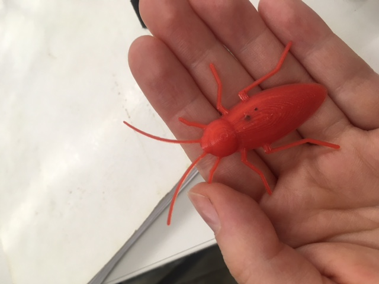
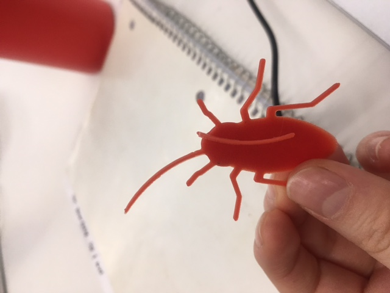
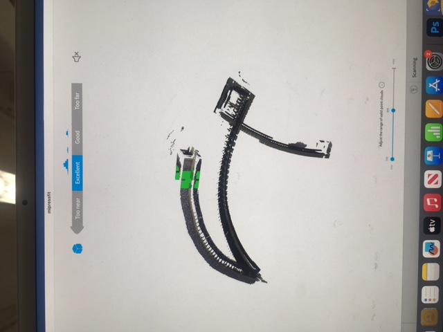
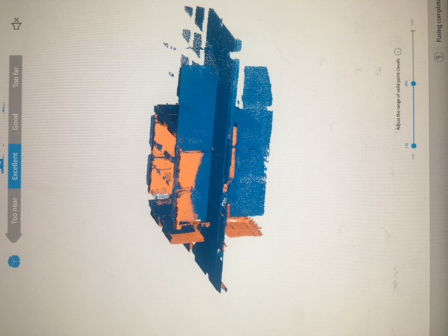
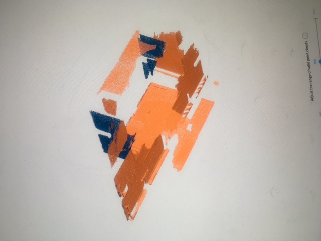
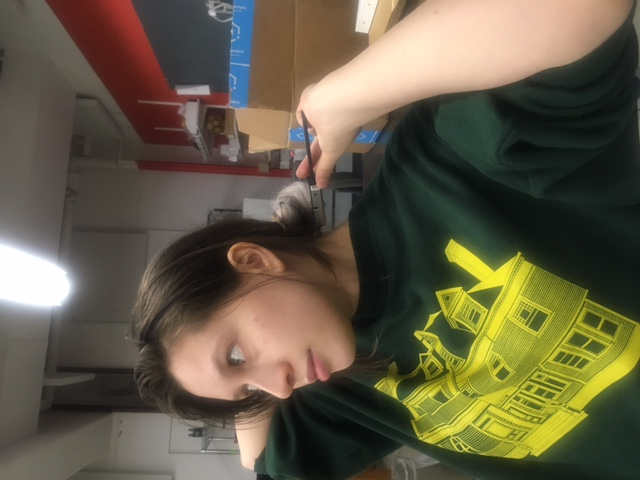
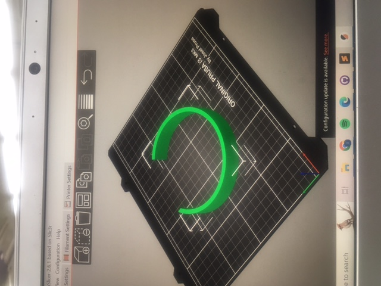
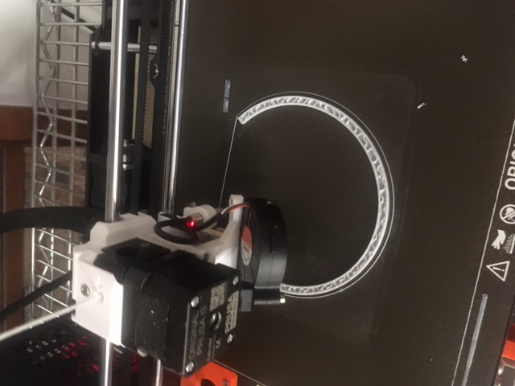
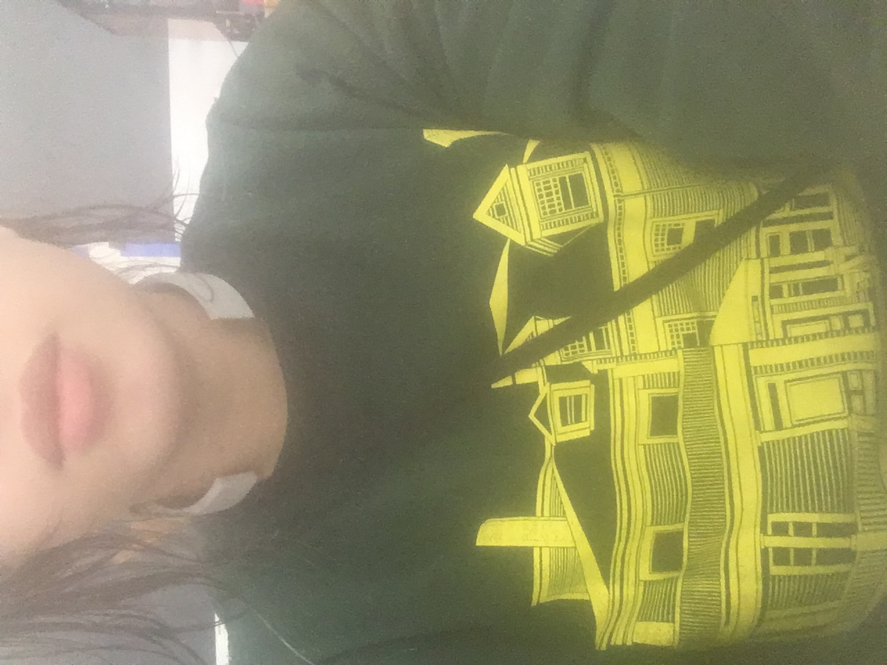

<br>
#### Week 5: 3D Design, Printing, Scanning
This week we learned more about 3D modeling, possibilities for 3D printing, and scanning objects in 3D.
When making my first print with the 3D printer, I of course decided to start by trying to print a cockroach for my elevator. I found an amazing 3D Cockroach model online, and the print took about 9 minutes. The photo of my print is below. The little black spots are because there was some remaining black spooled filament that wasn't properly cleaned before I printed. Unfortunately, I didn't protect my cockroach well enough and, because it has delicate parts printed with only one string of spooled filament, its antenna broke.
Here is the 3mf file:
<a download href='./3DCockroach.STL'>
3D Cockroach </a>


The next thing we learned was how to scan an object in 3D using the Revopoint scanner that we have in the lab. I was curious to see how it would do with my press-fit kit, because it's a complex shape with lots of ridges and overlapping planes. Let's just say that the scanner was as confused by my object as I was about how to use the scanner.
Here are several of my scanning failures:
<video width="270" height="430" controls>
<source src="scanfail.MOV" type="video/mp4">
Your browser does not support the video tag.
</video>



For the 3D design portion of the week, I decided to design a wearable part of my final project. I wanted to make a bespoke hard tight-fitting necklace, so that I can attach two contact microphones on each side of the throat for hands-free contact mic use.
Here I am measuring my neck with calipers so that the necklace fits just right!

A photo of my design:

The downloadable file of the design:
<a download href='./necklace1.3mf'>
3D Necklace </a>
Here is some of the printing process:
<video width="270" height="430" controls>
<source src="earlyprinting.mov" type="video/mp4">
Your browser does not support the video tag.
</video>

Here is the final 3D print of my design, which turned out amazing and fit me perfectly!
